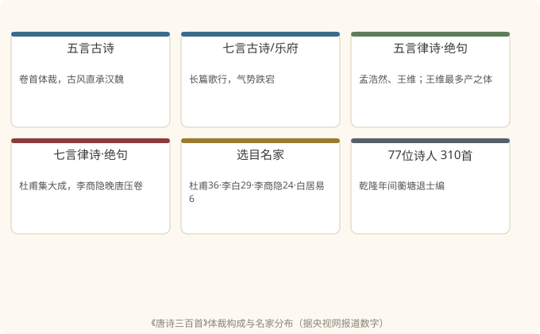

唐诗三百首
一、基本信息
| 作者 | 蘅塘退士（孙洙）与继室徐兰英合编 |
|---|---|
| 成书/出版 | 清乾隆年间编成（约1763—1764年间问世，'问世258年'之计为2021年口径） 传世258年《唐诗三百首》也有软硬伤？（央视网转载北京青年报）（媒体（官方）） |
| 国别/地区 | 中国 |
| 时代 | 古代 · 唐（所收）；编成于清乾隆年间 |
| 体裁 | 诗选集（蒙学读本） |
| 语言 | 汉语（文言诗体） |

《唐诗三百首》体裁构成与名家分布（据央视网报道数字）（主题·结构图）
二、创作背景
编者蘅塘退士即孙洙（1711—1778，字临西，江苏无锡人），乾隆十六年进士，时任县令；与继室徐兰英共同商定选目（央视网转载北京青年报报道）。编选初衷是替代不便儿童的《千家诗》，为家塾提供一个'取正不取变'的唐诗读本（此说为常见流传表述，本页转述待核）。
成书时间：报道按'问世258年'（2021年）推算为约1763年；而'乾隆二十九年（1764年）'亦为通行说法。两说并存，本页采约1763—1764年间，存疑待核。
选目特点：书成之后，三百余种唐诗选本中此书'公认最为流行'（央视网报道引述）。按体裁编排：五言古诗、七言古诗、五言律诗、七言律诗、五言绝句、七言绝句、乐府诸体。选目以名家名篇为主，杜甫36首、李白29首、李商隐24首，而白居易仅6首（报道所列数字）。
三、内容脉络
全书选录全唐77位诗人的310首诗（央视网报道数字），以体裁分卷。卷首蘅塘退士原序提出编选宗旨，流传最广的表述是'熟读唐诗三百首，不会吟诗也会吟'（此谚在原序文字中的确切表述待核）。
选诗兼顾时代脉络与名家代表作：初盛唐有王勃、王维、孟浩然、李白、杜甫的中坚阵容，中唐有韦应物、柳宗元、白居易、元稹，晚唐以杜牧、李商隐收束；张九龄《感遇》、王维《辋川闲居》、李白《月下独酌》、杜甫《春望》与《登高》、孟浩然《过故人庄》、李商隐《锦瑟》、杜牧《泊秦淮》等皆在册中（名篇列举为通行选目，逐首核对待查）。
作为蒙学读本，它塑造了此后两百余年中国人对'唐诗'的基本想象：所谓'唐诗'，很大程度上就是这三百多首诗所勾勒的轮廓。
四、主要人物表
| 人物 | 身份 | 说明 |
|---|---|---|
| （无特定主人公） | 选集 | 77位诗人各以名篇出现，无贯穿人物 |
五、主题与艺术特点
- 唐诗的体裁全景：古体与近体（律诗绝句）并收，读者可借此一次掌握唐代各体的形态与格律。
- 盛唐气象与家国情怀：王维的山水禅意、李白的浪漫飘逸、杜甫的沉郁顿挫，构成选目的人文骨架。
- '温柔敦厚'的诗教取向：选目偏中和含蓄之作；报道引上海师大李定广教授的批评——宫怨诗17首、闺怨诗14首偏多，《石壕吏》《卖炭翁》等社会批判名篇落选，存在'扬杜抑李、重李商隐轻白居易'的倾向（此为一家之言，报告已列，争议并存）。
- 蒙学与审美教育：以背诵入门养成诗感，是它区别于学术选本的根本定位。
六、影响与评论
- 央视网（转北京青年报）：唐诗选本流传三百余种，此书'公认最为流行的唐诗选本'，问世二百五十余年经久不衰。
传世258年《唐诗三百首》也有软硬伤？（央视网转载北京青年报）（媒体（官方）） - 报道所列选目分布：杜甫36首、李白29首、李商隐24首、白居易6首——此分布本身成为后世讨论选家眼光的公案（李定广《文艺研究》2021年第1期的批评为代表性观点）。
传世258年《唐诗三百首》也有软硬伤？（央视网转载北京青年报）（媒体（官方）） - Britannica 中国文学条目以李白（'中国最伟大诗人之一'）、杜甫（'公认中国文学史上最伟大的诗人'）、王维并列盛唐三峰，本选本的选目与这一评价谱系大体呼应。
Chinese literature — Encyclopaedia Britannica（百科全书） - 对蒙学传统的塑造：与《三字经》《千字文》并列而更重审美，'熟读唐诗三百首'成为汉语谚语（本条为一般性概括，谚语原序文字待核）。
传世258年《唐诗三百首》也有软硬伤？（央视网转载北京青年报）（媒体（官方））
七、阅读建议
难点
- 近体诗格律（平仄、粘对、对仗）需要最基础的入门知识，否则读律诗难辨工拙。
- 典故密集（李商隐尤其），注释不可缺。
- 选目有缺陷（见'影响与评论'），宜把它当入门地图而非全景；学有余力应转读《唐诗别裁集》或分家别集。
- 喻守真《唐诗三百首详析》（中华书局）：逐首剖析章法与声调，老牌详注本。
- 蘅塘退士编、陈婉俊补注本（中华书局1959年整理版）：接近原刻面貌的通行本（报道提及陈婉俊补注）。
- 金性尧《唐诗三百首新注》（上海古籍出版社）：题解与注释兼有今人眼光。
先按体裁读五言绝句、七言绝句建立节奏感 → 再攻律诗名篇（杜甫《登高》、李商隐《锦瑟》等）并对照格律说明 → 最后读古体与乐府长篇。配合《诗词大会》式的背诵检验是可行路径。
八、待核实
- 成书年份两说：约1763（'问世258年'推算）与乾隆二十九年（1764），本页并存待核。
- 选诗总数310首（77位诗人）为报道数字，与通行'313首'（陈婉俊补注本口径）等异说并存，本页从报道并注明差异。
- 原序'熟读唐诗三百首'句与'世俗儿童就学，即授千家诗'云云的确切原文待核。
- 名篇列举（如《春望》《锦瑟》是否在册）依通行记忆，未逐首核对原书目录。